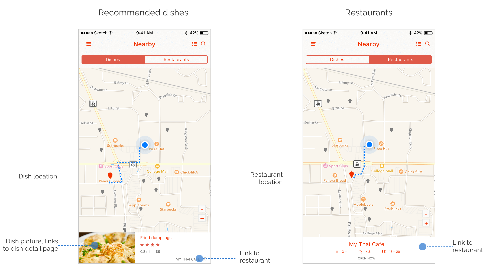
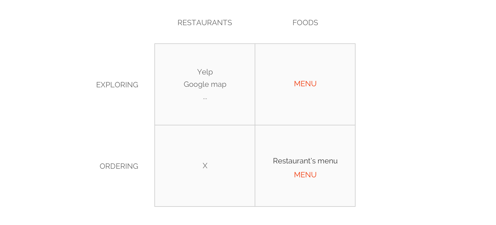

WHAT IS MENU
MENU is a food centered app that helps you find great local food and make decisions easily by building a direct connection between you and the food.
WHY SHOULD WE USE MENU
Now it is a common behavior for us to use apps like Yelp or Google map to discover restaurants. They provide valuable information like opening time, restaurant rates, prices, reviews and so on to help us find our favorite places. But still we have the same question that what should I eat?
MENU is designed for solving this problem by building a direction relationship between people with foods. Instead of restaurant-centered, MENU is food-centered.
HOW DOES IT WORK
Browsing nearby dishes AND restaurants in map view
MENU shows you recommended dishes nearby with pictures by default. Also you could switch to the traditional way that explores nearby restaurants.
Interactive prototype made by Pixate
List view for quick browsing
You could also use the list view to quickly browse recommended dish pictures or dish pictures of restaurants.
Interactive prototype made by Pixate
Restaurant detail
Easily ordering food with dish pictures and rates.

Dish detail
The dish page shows you every detail you need to know about this dish. Also you could save this dish to your favourite, rate it or make a comment.
Write a review
Have some thoughts on this dish? Rate it and write a review!
DEFINE PROBLEM
As I stated above, apps like Yelp, Google map could help to find restaurants, but do not help much on what to eat.
To better understand this, I would like to give two typical scenarios which are exploring restaurants/foods and ordering in a restaurant.
Scenario 1
Imaging that, you, a hungry tourist, are standing on a street in an unfamiliar city, and try to find some nice food. You take out your phone, open Yelp. It is nice to see the rates of nearby restaurants, but not enough for you to make decision. You want see some pictures of the dishes, but only find a few irrelative pictures like below.
Yelp does not always help because sometimes there are no pictures or recommendations.

That is why you should use MENU. See the dish pictures!

Scenario 2
Sitting in a restaurant, you just got lost and felt helpless while holding a 5 pages’ text-only menu. Because you have no idea what these dishes are and what is best for you. Just had to take your chance ordering something seems good.
This menu is really frustrating, because you do not know what all the food are, how they taste and which is best for you.

That is why you should use MENU, see the dish pictures, rates and comments!
As you could see from the matrix, MENU is food-centered instead of restaurant-centered. It gives users a direct entrance to explore and order food.
USER RESEARCH
As an international student, I usually find myself having a hard time to understand the restaurants’ menu. What if they could just show me how the dishes look! This is where our initial idea of MENU comes from.
But is this a common need that not only for interactional students but also for American students? After some interviews, we believed that the answer is YES.
BRAINSTORMING
We did brainstorming several times, met every two days and iterated our ideas and sketches. We got many ideas and we killed most of them to keep our design as simple as possible.

ITERATION
We did many iterations. Here are three typical iteration designs of homepage I would like to share with you. They have different focus.
Iteration-1
It emphasises browsing food quickly by showing the food in big pictures without details and the location of the restaurant. The pros would be the users could quickly browse food pictures and make decision.
Iteration-2
The second one adds dish details but may slow the browsing speed. The pros would be that some users who are sensitive of the price or ingredients may find the details very helpful.
Iteration-3
The third one emphasises the restaurant location while with less pictures and no food details. The pros would be users could have a better sense of the location and navigate easily on the map.
TO BE DONE
We know that to make this a real product we still have a long way to go and need to answer a lot of questions like where does these pictures come from; How to promote users to share their pictures and give comments; How to provide more help for specific needs, and so on.
It is never easy to make a real product. But we believe this is a good beginning.